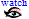
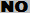

![[DI]](../common/DI.gif "Status: needs discussion")
|  | 1. | On Obfuscating Point Functions | 03/07 00:29 | |||
| 5. | A sufficient condition for key-privacy | 03/07 00:29 | | (4) | ||
| 16. | Narrow T-functions | 03/07 00:29 | ||||
| 27. | Tag-KEM/DEM: A New Framework for Hybrid Encryption | 03/07 00:29 | (4.8) | |||
| 31. | The Vector Decomposition Problem for Elliptic and Hyperelliptic Curves | 03/07 00:29 | ||||
| 33. | A Flexible Framework for Secret Handshakes | 03/07 00:29 | ||||
| 35. | Concurrent Composition of Secure Protocols in the Timing Model | 03/07 00:29 | ||||
| 54. | Key Derivation and Randomness Extraction | 03/07 00:29 |
| Some other links: o Download submissions in one file o Work with watch list o Work with scorecard files o See results of completed votes o Change password o List all reviews and discussions in html or ascii o Old versions of reviews... |
| Legend: | , , , , , :
Status marks (None, [Maybe-]Reject, Discuss, [Maybe-]Accept) |
| , , : Submit a new/revised report about a submissoin | |
| , : See reports and discussion boards (all read / some unread) |